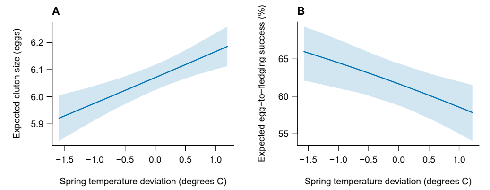
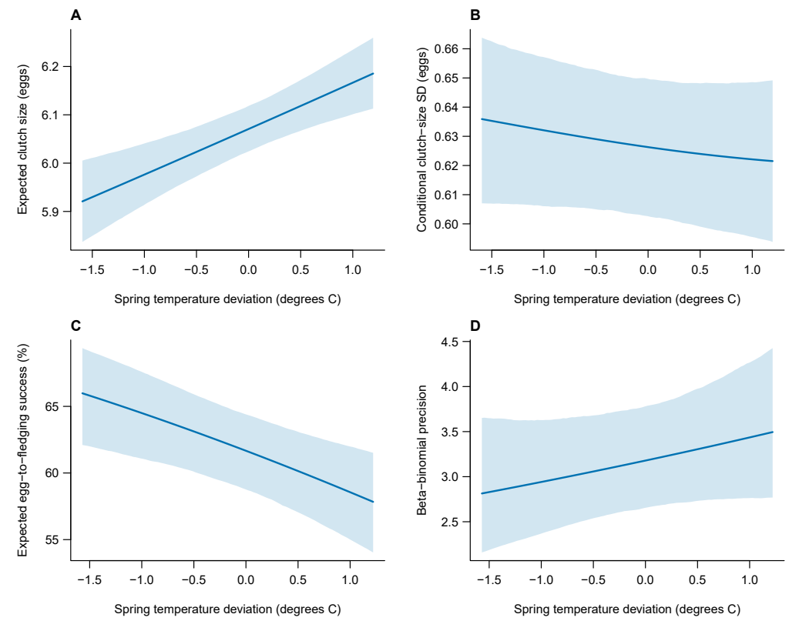
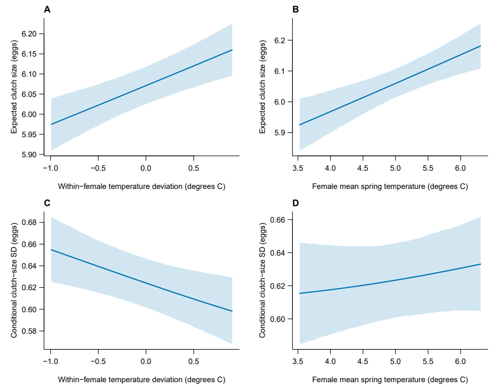
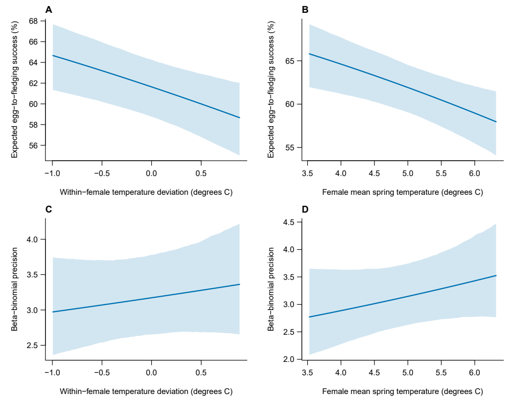
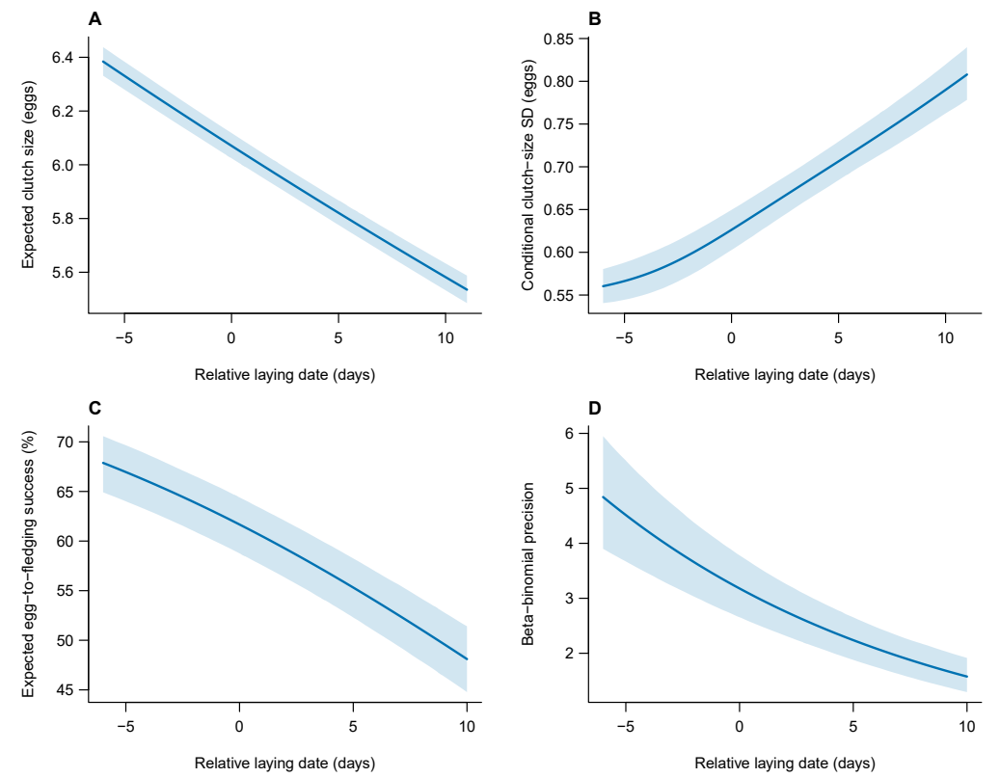
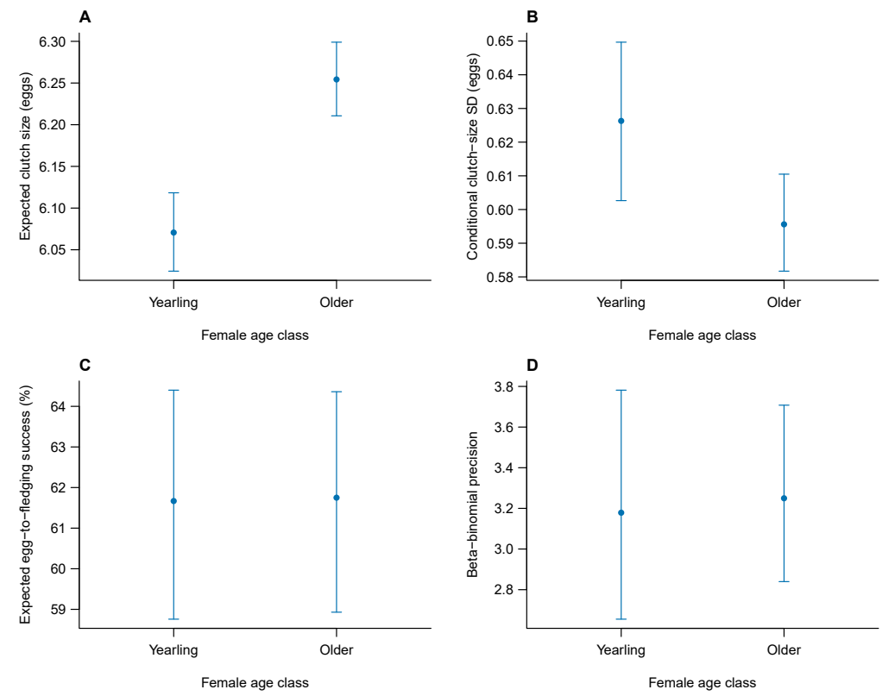
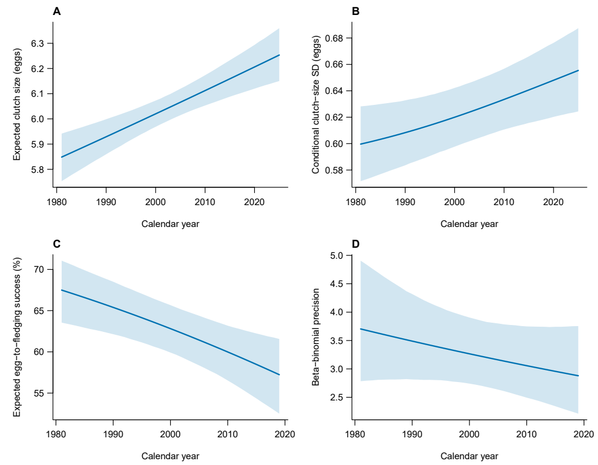
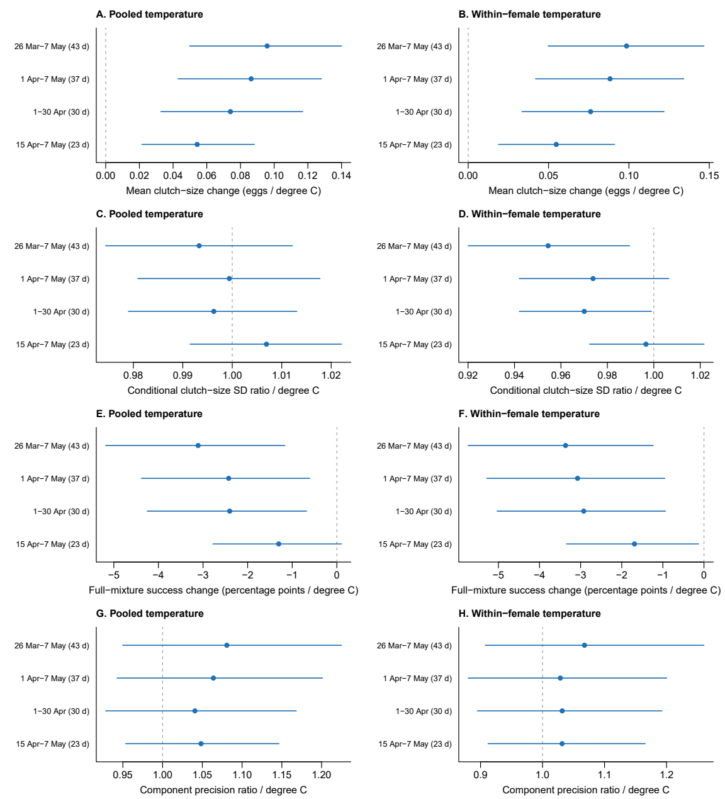

Corrected analysis and sensitivity checks
Current corrected analysis — 20 November 2026
The reproductive results on this page replace the earlier release. Entire recorded histories of experimental females and all records in ambiguous duplicate female-season groups were excluded. The corrected samples contain 12,344 clutch records from 8,675 females and 9,785 fledging records from 7,128 females. Earlier analysis pages are retained as clearly marked archives.
Downloads and reproduction
- Revised Supplementary Materials
- Corrected model-ready data, results and analysis scripts
- Package README and reproduction instructions
- Runner
The package contains anonymous model-ready records, numerical exports, scripts and checksums. It supports fitting from the supplied model-ready records; it is not a complete raw-field-data cleaning workflow. Fitting steps were run in the separate revision checkout. The assembled public wrapper has been syntax-checked, but has not yet been rerun end-to-end after extraction into a further fresh checkout. The original field-data source and access information remain documented in the archived workflow.
Main temperature associations
For a +1°C contrast, the pooled mean clutch-size change is approximately +0.096 eggs. The primary-window within-female conditional clutch-SD ratio is 0.954 (95% CI 0.918–0.990), corresponding to 0.624 to 0.596 eggs at the reference conditions. This is conditional variation among attempts, not female-specific repeatability or demonstrated plasticity. Pooled full-mixture egg-to-fledging success changes from 61.67% to 58.56% (−3.11 percentage points, 95% CI −5.14 to −1.13).
Fixed-window sensitivity — SM S1.13
The primary window remains 26 March–7 May. Alternative fixed windows are 1 April–7 May, 1–30 April, and 15 April–7 May, using identical corrected trait-specific records. The positive association with mean clutch size persists in all windows. Fledging-success estimates remain negative; within-female intervals exclude zero in all windows, whereas pooled and between-female intervals include zero in the shortest/latest window. The within-female clutch-SD association is supported for the primary and April-only windows, but is uncertain for the other two. Thus, the other results depend more on exposure definition. See Methods 2.6, Results 3.3 and Discussion 4.3; SM Tables S16–S18 and Fig. S6.
Exact-age sensitivity — SM S1.11
Restricting the analysis to females of known exact age substantially reduces and changes the sample: 7,277 clutch records from 4,957 females and 5,906 fledging records from 4,186 females. Within these identical subsets, replacing age classes with linear or quadratic exact age changes the estimated temperature associations little. However, the clutch-size variability association is already uncertain in the restricted sample with categorical age. Thus, the analysis provides limited additional information about age adjustment and cannot establish robustness of the full-sample result. It estimates conditional temperature associations among age-known females, not individual ageing trajectories. These analyses remain supplementary (Tables S10–S13); detailed exact-age results are not presented as a main-text finding.
Temporal models without temperature — SM S1.10
Expected clutch size increases from 5.85 to 6.25 eggs over 1981–2025 (+0.405, 95% CI 0.243–0.576). Conditional clutch-SD increases (ratio 1.093, 95% CI 1.021–1.169). Expected full-mixture fledging success declines from 67.5% to 57.2% over 1981–2019 (−10.3 percentage points, 95% CI −16.4 to −4.0); component-precision change is uncertain. These models retain age class and relative laying date. They provide temporal context and do not identify a causal warming effect. Full results: Tables S8–S9 and Fig. S5; brief interpretation: Discussion 4.4, final paragraph.
Temperature in the additional-zero component — SM S1.12
Adding temperature to the additional-zero equation improves AIC by 4.67. The full-mixture success contrast is −5.41 percentage points per +1°C (95% CI −8.12 to −2.79). For a reference six-egg clutch, full-mixture failure probability increases from 19.52% to 23.14%. The association remains negative, but its magnitude depends on this specification. Component precision is distinct from full-mixture variability; additional zeros are not assigned a separate biological failure mechanism. See Tables S14–S15.
Verification and limits
The primary corrected models, temperature-free temporal models, exact-age specifications, additional-zero comparison and fixed-window sensitivity models have fresh fitting outputs and numerical checks. Diagnostic exports include failed attempts for audit; only validated retained fits support inference. The earlier scale-year random-effect attempt used the previous sample. A new scale-year random-effect fit and a repeated-females-only primary-temperature fit have not yet been completed on the corrected sample. No robustness claim is made for those checks. Environmental temperature analyses use independent annual weather records and are unchanged by female exclusions.
Revised figures
Main temperature associations

Complete temperature predictions

Within and between females — clutch size

Within and between females — fledging success

Laying-date predictions

Age-class predictions

Temporal predictions without temperature

Fixed-window sensitivity

Numerical exports and scripts
All files below also appear in the downloadable archive. Model-ready records have anonymous identifiers. Calendar-year decomposition is a response-only working check and is not part of this public supplement.
data_derived/analysis_clean_20261119
tables/within_between_20261026_clean_20261119
- clutch_baseline_summary.txt
- clutch_within_between_summary.txt
- conditional_simulation_checks.csv
- export_session_info.txt
- fixed_design_vif.csv
- fixed_effects.csv
- fledging_baseline_summary.txt
- fledging_within_between_summary.txt
- model_comparison.csv
- optimizer_comparison.csv
- prediction_curves.csv
- random_effect_SD.csv
- reference_effects_per_degree.csv
- sample_metadata.csv
- session_info.txt
- within_between_contrasts.csv
tables/temporal_clean_20261119
- clutch_year_mean.csv
- clutch_year_sd.csv
- fledging_year_phi.csv
- fledging_year_success.csv
- random_SD.csv
- README.txt
- temporal_simulation_checks.csv
tables/joint_year_clean_20261119
tables/curation_checks_20261119
- baseline_random_SD.csv
- baseline_vif.csv
- clutch_SD_contrasts.csv
- extra_zero_fixed.csv
- extra_zero_model_comparison.csv
- extra_zero_validated_comparison.csv
- extra_zero_validated_fixed.csv
- full_mixture_contrasts.csv
- new_group_simulations.csv
- poisson_diagnostics.csv
- poisson_fixed.csv
- sample_summary.csv
- session_info.txt
tables/reproduced
- baseline_predictions/contrasts.csv
- baseline_predictions/curves.csv
- baseline_predictions/session_info.txt
- baseline_simulation_checks.csv
models/temporal_clean_20261119
- clutch_diagnostics.csv
- clutch_with_temperature_summary.txt
- clutch_without_temperature_summary.txt
- COMPLETE.txt
- fixed_effects.csv
- fledging_diagnostics.csv
- fledging_with_temperature_summary.txt
- fledging_without_temperature_summary.txt
- observed_annual.csv
- optimizer_comparison.csv
- original_model_hashes.csv
- reference_curves.csv
- session_info.txt
- temporal_changes.csv
age_sensitivity_20261119
- age_counts.csv
- clutch_age_class_summary.txt
- clutch_exact_age_linear_summary.txt
- clutch_exact_age_quadratic_summary.txt
- clutch_known_age_model_data.csv
- diagnostics.csv
- fixed_effects.csv
- fledging_age_class_summary.txt
- fledging_exact_age_linear_summary.txt
- fledging_exact_age_quadratic_summary.txt
- fledging_known_age_model_data.csv
- reference_contrasts.csv
- sample_counts.csv
- session_info.txt
- validated_diagnostics.csv
- validated_fixed_effects.csv
window_sensitivity_20261119
- annual_exposures.csv
- diagnostics.csv
- failed_optimizer_audit.csv
- fixed_effects.csv
- reference_contrasts.csv
- session_info.txt